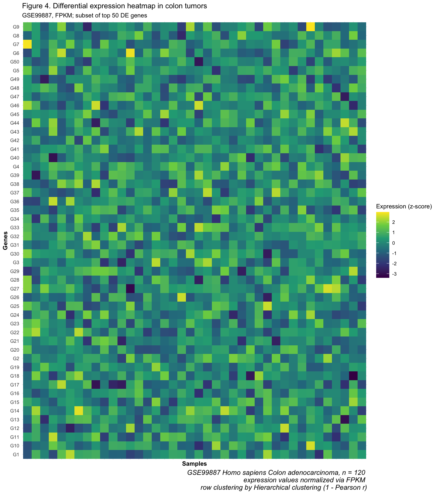
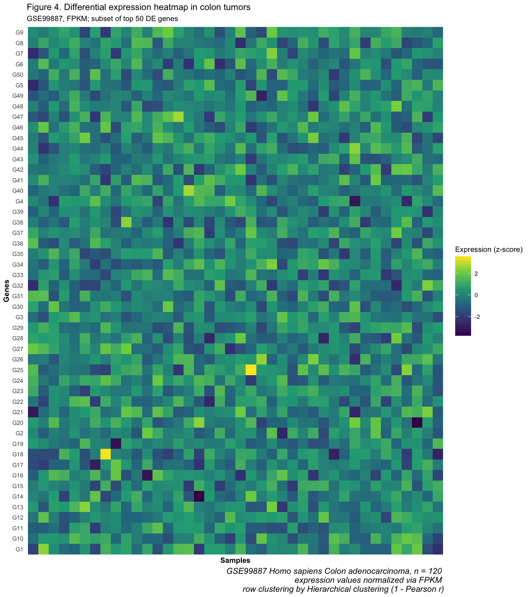
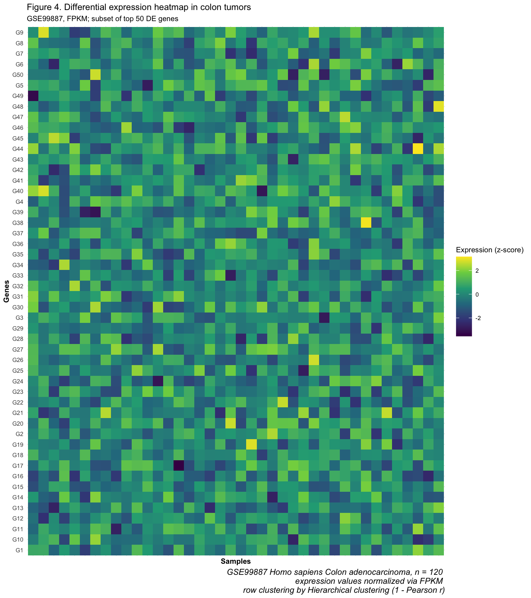
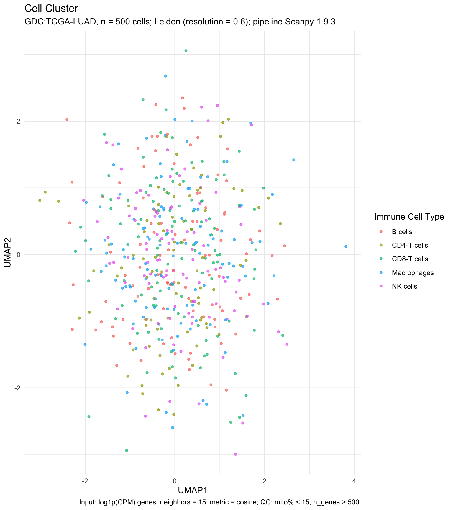

Designing FAIR Biomedical Visuals
Lesley Chapman Hannah, Ph.D., M.S.
College of Graduate Studies
Northeast Ohio Medical University
Lecture Outline
Discuss topics on how to design and build our own FAIR biomedical figures
Coding Example: Discuss coding example for one of the FAIR principles
Coding Example: Discuss a complete example where are FAIR principles are considered
What Does FAIR Look Like in Practice?
Designing with FAIR from the start prevents downstream rework: reviewers, journal data editors, and regulatory partners expect traceable visuals
FAIR eliminates ambiguity → downstream analysis teams (industry ML teams, meta-analysis groups, FDA reviewers) can reuse results without asking for clarification
Figures are not the end of an analysis — they become machine-readable artifacts in public repositories, HTA submissions, and RWE pipelines
FAIR leads to faster clinical translation: more consistent interpretation → less risk of misrepresentation → quicker consensus
Figures built for versioning and downstream interpretation
| Analytical Role | Example |
|---|---|
Input to ML meta-studies |
Hundreds of UMAP embeddings scraped into LLM-driven knowledge graphs |
Evidence for regulatory review |
Figures cited directly in FDA filings |
Traceable clinical data assets |
Variant classification evidence |
Reproducibility checkpoints |
Data versioning, statistical parameterization |
FAIR Visualization Framework: Purpose
| FAIR Principle | Design Question | Value for Biomedical Stakeholders |
|---|---|---|
Findable |
Could someone locate and cite this figure later? | Journals / Meta-analysts |
Accessible |
Could a colorblind viewer or screen reader interpret the plot? | Clinicians / Review boards |
Interoperable |
Does it use standard ontologies and open formats? | Data engineers / AI pipelines |
Reusable |
Could someone replicate the exact figure? | Researchers / Regulators |
FAIR Visualization Design Strategy: Biomedical Code Examplese
| FAIR Principle | Design Goal | Biomedical Example |
|---|---|---|
Findable |
Structured titles and captions | Figure 3. TCGA-LUAD RNA-seq (v2.2, n=542), DEGs by log₂FC and FDR |
Accessible |
Accessible palettes | Volcano plot w/ viridis, alt-text: “Up-reg genes in red at FDR<0.05…” |
Interoperable |
Standard ontologies and open formats | GO-based Bubble chart exported as SVG or JSON |
Reusable |
Code and parameter transparency | Quarto/R Markdown-generated clinical lab plots (i.e.: store code in online repo) |
Deep Dive: Findability in FAIR Visualization
Focus: one FAIR design goal
- students are encouraged to independently review the remaining FAIR strategies—Accessibility, Interoperability, and Reusability
Findability means a figure is self-identifying
A human or machine can locate the exact data and methods behind the figure
Findability in Biomedical Figures
Figure includes:
source attribution : where did the data come from? [GEO accession, dbGaP project, clinical trial registry ID]
cohort transparency : who is represented in this evidence? [n, disease state, treatment-naïve vs refractory, inclusion/exclusion]
methodological anchoring : how was this evidence constructed? [alignment, normalization, clustering, versioning of tools]
question alignment: why does this figure exist? [what biological hypothesis or clinical decision does it address?]
Applied example
Task: Show IBD inflammation phenotypes from biopsy transcriptomes
Plot Type and Rationale: Heatmap to claim an interferon-gamma response signature distinguishes severe Ulcerative Colitis (UC)
Plot Explanation:
Rows: genes (often the “top” differentially expressed genes)
Columns: patient samples (UC biopsies, varying severity)
Color: relative gene expression within each gene (e.g., z-scores)
Bright/yellow = high expression
Dark/purple = low expression
Applied example
| Attribute | What is included? | Why it matters |
|---|---|---|
Dataset origin |
GEO: GSE99887 | Others can download the data |
Cohort |
UC vs Crohn’s, n=120, treatment-naïve | Validity and bias assessment |
Preprocessing |
DESeq2 VST, top 50 variable genes | Methods must match the question |
Clustering |
Pearson + Ward.D2 | Reproducible interpretation of patterns |

FAIR Data Visualization in Practice
Research Question: Do tumors contain distinct immune cell phenotypes that may influence response to immunotherapy?
Data Visualization Question: Are there biologically meaningful immune phenotypes emerging from the high-dimensional data?
Plot Type: UMAP visualization
FAIR Data Visualization in Practice
Research Question: Do tumors contain distinct immune cell phenotypes that may influence response to immunotherapy?
Plot rationale:
Tumor microenvironment varies dramatically patient to patient
Certain T-cell states (e.g., CD8-exhausted, Treg-like) are associated with immune evasion
Cluster identity and abundance may predict which patients benefit from checkpoint inhibitors
Applied example
| Dimension | Non-FAIR |
|---|---|
Dataset identification |
Missing |
QC transparency |
None |
Semantics |
Clusters A–E |
Accessibility |
Unclear palette |
Reusability |
Static PNG |
Clinical readiness |
No |

Applied example
| Feature | FAIR |
|---|---|
Dataset identification |
TCGA-LUAD RNA-seq (v2.2) |
QC transparency |
TPM >1, mito% < 15, ComBat batch correction |
Semantics |
CD8-Exhausted, Treg-like, etc. |
Accessibility |
Legend + accessible colors |
Reusability |
Caption w/ stats + code DOI |
Clinical readiness |
Supports immunotherapy cohort stratification |

Summary
Figures are a part of a biomedical evidence ecosystem, informing downstream interpretation, machine learning, and regulatory review
Components of a well designed figure:
Connects data to decisions: clear hypothesis alignment and cohort transparency ensure the figure answers a real biomedical question
Stays interpretable across contexts and audiences: accessibility and semantic clarity (e.g., biological state labels, QC details) enable clinicians, analysts, and reviewers to trust what they see
Summary
Components of a well designed figure:
Maintains traceability across versions and systems: dataset IDs, methods, and open formats allow others — including machines — to retrieve, verify, and reuse the visual without guesswork
Supports future-proof analysis: standard structures, code transparency, and interoperable formats turn figures into reusable scientific assets — powering meta-studies, knowledge graphs, and regulatory filings